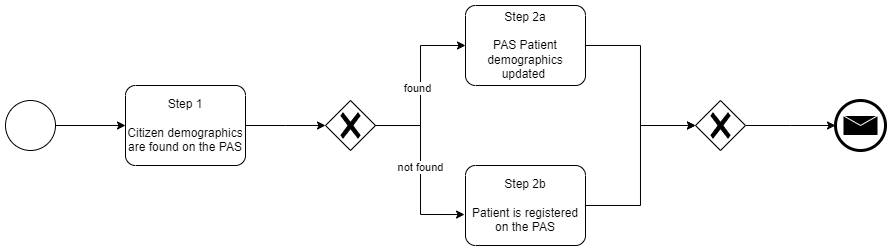
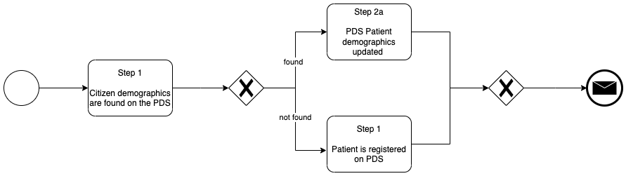

Health Administration Interoperability Standards - Skunkworks
0.0.1 - ci-build

Health Administration Interoperability Standards - Skunkworks
0.0.1 - ci-build

Health Administration Interoperability Standards - Skunkworks - Local Development build (v0.0.1) built by the FHIR (HL7® FHIR® Standard) Build Tools. See the Directory of published versions
The scope of this document and proposals is national, regional, NHS Trust and supplier.
The example below finds a patient with a MRN identifier of 112234
MSH|^~\&|CarefxITK|ORG1|PAS|ORG1|20100511125610+0100||QBP^Q21^QBP_Q21|04857982024975328990|P|2.4|||||GBR||EN||ITKv1.0
QPD|Q22^Get Person Demographics|QRY123|112234^^^METRO HOSPITAL|
RCP|I|20^RD
The response to this query contains a single patient in the PID and PD1 segments.
MSH|^~\&|PAS|ORG1|CarefxITK|ORG1|20100511125611||RSP^K21^RSP_K21|306944|P|2.4|||||GBR||EN||ITKv1.0
MSA|AA|04857982024975328990
QAK|QRY123|OK|Q21^Get Person Demographics||1
QPD|Q21^Get Person Demographics|QRY123|112234^^^METRO HOSPITAL|
PID|1||112234^^^METRO HOSPITAL||Esther^Priya^^^MS^^L||19861129000000|2|||1 Birley Close^Appley Bridge^Wigan^^WN6 9JL^GBR^H^Q31^Lancashire||||EN|M|C22|||||A|Berlin|N||GBR||DEU||||ED|
PD1|||ST JOHN'S WOOD MED PRACT^^E87609|G9312382^Abadi^DI^^^Dr
The HL7 v2/IHE PDQ is probably not going to be favoured by third party application vendors. They are more likely to favour the IHE PDQm/HL7 FHIR RESTful approach.
Although PDS is not IHE PDQm compliant it has followed this pattern. Please see NHS England Personal Demographics Service - FHIR API: Search for a patient
Donald has moved from Edinburgh (Scotland) to Leeds (England) for work reasons. Donald has a series condition and was recieving treatment from NHS Lothian, NHS Lothian has liased with Leeds Foundation NHS Trust to continue his care. As Donald is a UK citizen he is eligible for care from NHS England and so Leeds Foundation NHS Trust apply for an English NHS Number

Depending on whether Donald is found or not.
a. If Donald is found on the PAS, Donalds demographics record would be updated.
b. If Donalds is not found, Donald is registered Donald as a Patient on the PAS. They would have allocated a Medical Record Number (MRN) to identify Donald across the trusts computer systems and possibly record his (NHS Scotland) CHI Number. In addition, a Task would be created to obtain a NHS Number for Donald.
As HL7 FHIR Donalds record would look like Patient Donald with CHI Number and MRN. The updating/creating of this record will generate event notifications to inform other systems of this change, (Leeds Teaching Trust follows NHS England (ADT) ITK HL7 v2 (2.4) Message Specification).
Leeds Teaching NHS Trust registering Donald with NHS England looks like this:

Depending on the results:
a. If Donald is found on PDS, the Leeds Teaching Trust PAS is updated with the NHS Number. Leeds Teaching Trust will likely update the record on PDS with Donalds new address.
b. If Donald is not found on PDS, a NHS Number allocation request (register Donald for care in NHS England) is sent and the returned NHS Number is used to update Leeds Teaching Trusts PAS. The FHIR Patient record returned from PDS looks something like this Patient Donald with NHS Number
Notes:
To improve the use of the NHS Number and automate NHS Number verification processes, Calderdale and Huddersfield NHS Foundation Trust connected their Trust Integration Engine to NHS England’s Personnel Demographics Service.
The existing HL7 v2 ADT feeds included a wire tap which would call PDS if:
If results were found the Patient Administration System (PAS) was updated with verification status or a found NHS Number.
This use case is from an Online Consultation providers use case supplied to PDS.
id of the patient. Demographic records on the GP system may be updated.patientId of the patient with this NHS Number returned in the first call.patientId from the previous step as a query parameter.
IG © 2024+ NHS England. Package uk.nhs.england.administration#0.0.1 based on FHIR 4.0.1. Generated 2024-04-12